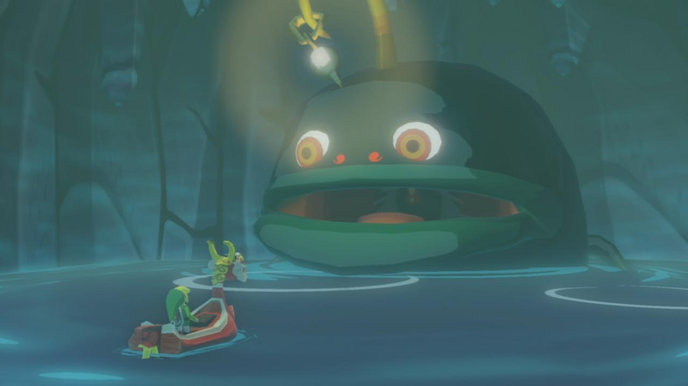
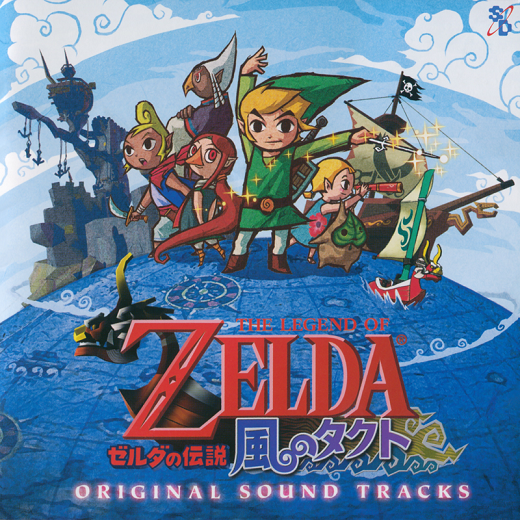

The Legend of Zelda: The Wind Waker, conocido en Japón como Zelda no Densetsu: Kaze no Takuto (ゼルダの伝説 風のタクト Zeruda no Densetsu Kaze no Takuto), es un videojuego de acción-aventura de 2002 desarrollado por la filial EAD y distribuido por Nintendo para la videoconsola Nintendo GameCube. Es el décimo lanzamiento de la franquicia The Legend of Zelda y la precuela directa de The Legend of Zelda: Phantom Hourglass, de Nintendo DS.
Link (リンク Rinku?): es un joven que habita en la isla Initia y que, al cumplir su mayoría de edad, recibe sus atuendos verdes similares a los del Héroe del Tiempo de la leyenda.
Abú (ジャブー Jabū?): es un pez gigante que solía habitar en las islas Pez Volador, hasta la llegada de Ganon0, cuando se ocultó en una caverna en la isla Initia. Es el Espíritu del Agua.
Los temas musicales usados en The Wind Waker fueron compuestos por Kenta Nagata, Hajime Wakai, Tōru Minegishi y Kōji Kondō. La banda sonora del juego, titulada Zelda no Densetsu ~Kaze no Takuto~ Original Sound Tracks (en inglés: The Legend of Zelda - The Wind Waker Original Sound Tracks) debutó en el mercado japonés el 19 de marzo de 2003
